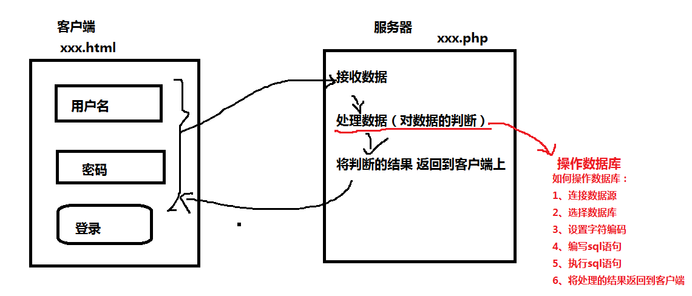

2、php操作mySql
比如登录的过程 ：

3、实现 学生成绩管理系统 ：
第一步 ： 数据库设计 数据库一个
数据表设计 一张 用户表（负责管理员登录） 一张学生成绩表
用户表 ：
create table users
(
uid int primary key auto_increment,
uname varchar(50),
upwd varchar(50)
)
成绩表 ：
create table score
(
sid int primary key auto_increment,
sname varchar(50),
h5 int,
js int
)
4、php操作mysql的具体步骤实现过程
//1--连接数据源 mysql_connect() 返回值为 要连接的数据源
$db = mysql_connect("localhost","root","root");//服务器的名称 用户名 密码
//2--选择数据源 mysql_select_db()
mysql_select_db("db1806",$db);//要操作的数据库 连接数据库的结果
//3--设置字符编码 mysql_query()
mysql_query("set names utf8");
//4--编写sql语句 (复制)
$sql = "insert into users(`uname`,`upwd`) values('$uname','$upwd')"; （这个步骤是可变的sql语句）
//5--执行sql语句 mysql_query() 返回值 受影响的行数(insert update delete)
$row = mysql_query( $sql );//参数是要执行的sql语句
5、从客户端向服务器传值方式
1-- 通过 表单的name属性传值
2-- 通过 超链接的路径传值 <a href='xxx.php?'> 使用$_GET方式接收
绝对路径 ： 完整路径
6、修改业务逻辑